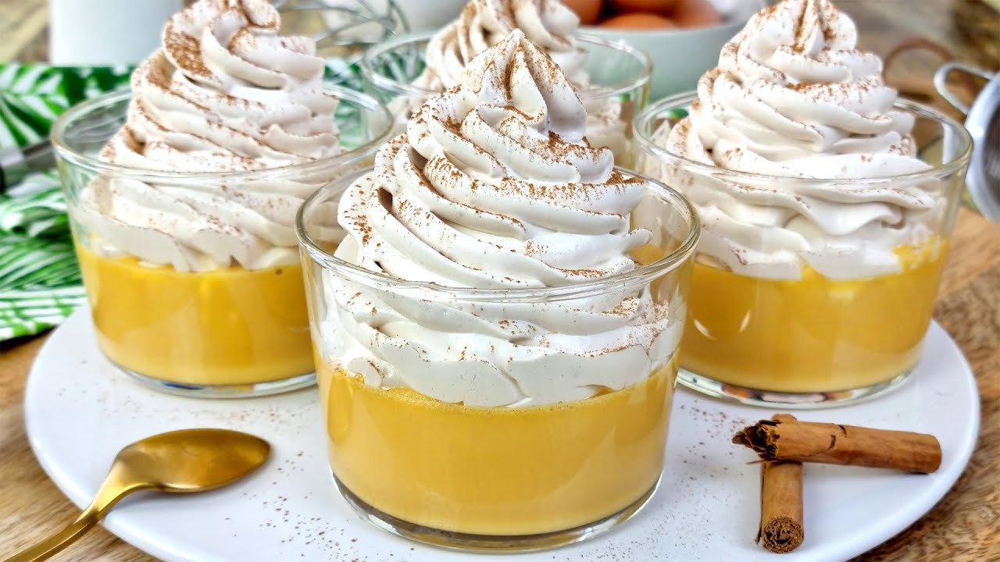
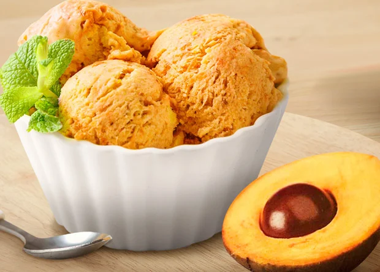
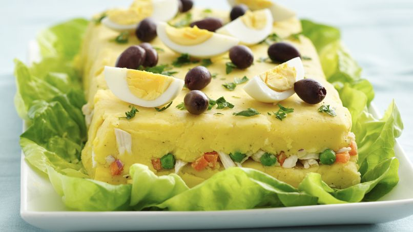
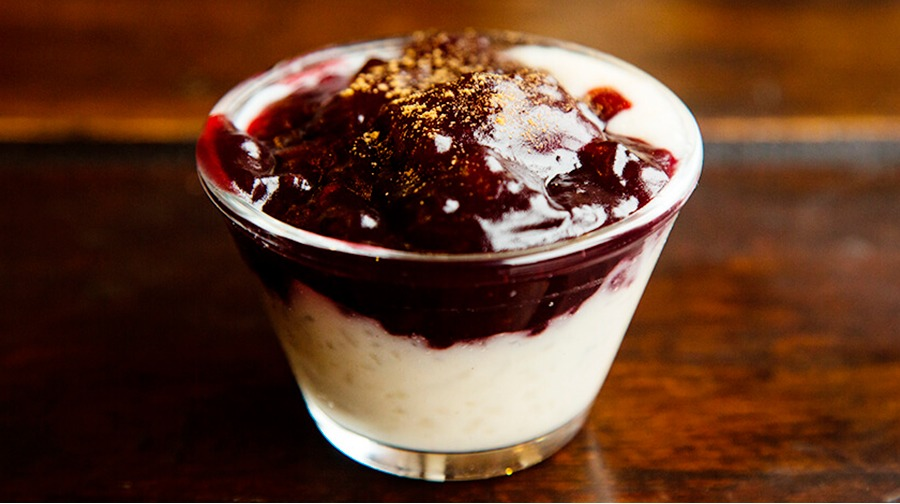

Peru is a country bursting with vibrant flavors, unique ingredients,
and centuries-old culinary traditions. During my recent trip, I
immersed myself in its rich food culture and discovered incredible new
recipes that I can't wait to share with you. From sweet treats to
savory delights, here are some of the most exciting dishes I learned!
1. Suspiro a la Limeña (Lima's Sweet Sigh)

This classic Peruvian dessert is a dreamy combination of creamy dulce
de leche topped with fluffy meringue. The name translates to "Lima's
sigh," and one bite will make you understand why—it's
pure indulgence!
What makes it special?
-
A silky manjar blanco (Peruvian dulce de leche)
base
- Port-infused meringue for a delicate boozy touch
- A sprinkle of cinnamon on top
Perfect for: A luxurious dessert to impress guests!
Learn more about
Suspiro a la Limeña history.
2. Picarones (Peruvian Sweet Potato Donuts)

Move over, regular donuts—Picarones are here! These
ring-shaped fritters are made from a dough of sweet potato and squash,
deep-fried, and drizzled with
spiced chancaca syrup (a molasses-like sauce).
Why I love them:
- Naturally sweet from the squash and sweet potato
- Crispy outside, soft inside
- Coated in a fragrant syrup with cinnamon and cloves
Perfect for: A cozy autumn treat or a fun weekend project!
Try this
authentic Picarones recipe.
3. Lucuma Ice Cream

If you've never tried lúcuma, you're missing out!
This golden Peruvian fruit has a unique flavor—like a mix of sweet
potato, maple, and caramel. It's often used in desserts, and the ice
cream version is heavenly.
How to enjoy it:
- Blend lúcuma pulp with condensed milk and cream
- Serve with a sprinkle of crushed pecans
-
Or make a lúcuma milkshake for extra creaminess
Perfect for: A refreshing yet rich dessert with a tropical
twist.
Buy
lúcuma powder online
if you can't find fresh fruit.
4. Causa Rellena (Layered Potato Terrine)

Not all Peruvian treasures are sweet—Causa is a
stunning layered dish made with yellow potatoes, lime, and ají
amarillo (yellow chili pepper). It's often filled with avocado,
chicken, or tuna.
Why it's a must-try:
- Bright, zesty flavors from lime and chili
- Beautiful presentation (great for parties!)
- Can be served chilled, making it perfect for summer
Perfect for: A light yet flavorful appetizer or lunch.
Watch
how to make Causa
on YouTube.
5. Arroz con Leche & Mazamorra Morada (Combo Dessert)

Peruvians love pairing creamy rice pudding with
purple corn pudding (mazamorra morada). The contrast
between the two is magical!
What makes it unique?
-
Arroz con leche is infused with cinnamon and
citrus zest
-
Mazamorra morada is made from purple corn, fruit,
and spices
- Served together for a mix of textures and flavors
Perfect for: A comforting, spiced dessert duo.
Find
purple corn flour
to make authentic mazamorra.
Bringing Peru to Your Kitchen
Exploring Peru's cuisine was an unforgettable experience, and I'm
excited to incorporate these flavors into my cooking. Have you tried
any Peruvian dishes before? Which one would you like to make first?
Let me know in the comments! And stay tuned for more
international recipe adventures.
🍴 Happy cooking! 🍴